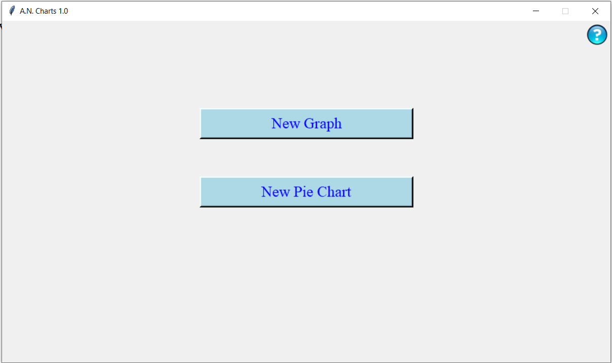
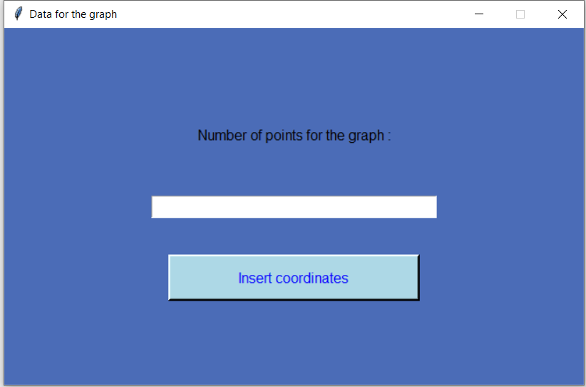
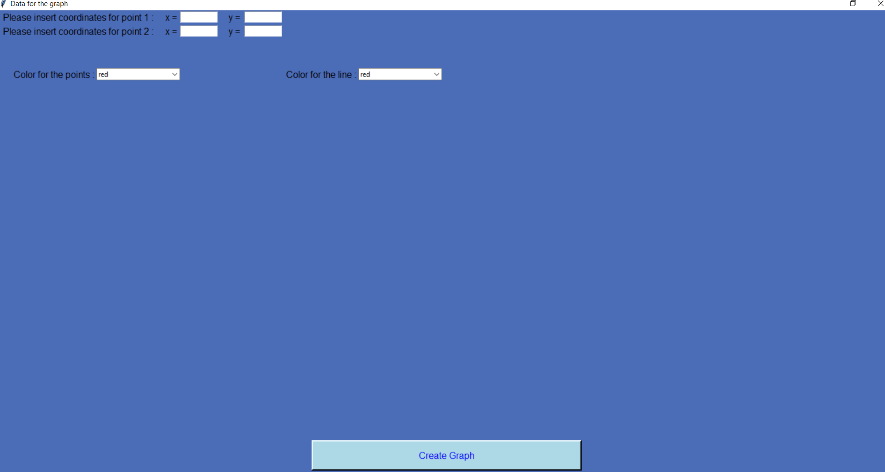
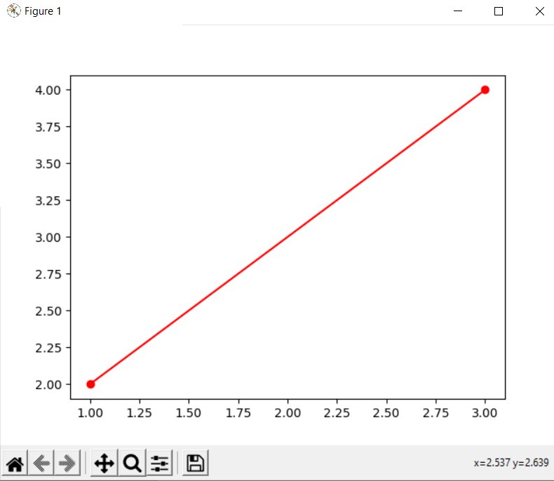

Documentation – A.N.Charts ( 2D Charts ) - version 1.0
If you have any problems with the software , email me : andreinecsulea14@outlook.com
Using instructions :
1) Main window

Here you have 2 buttons – first one is for 2D Graphs (Plot Charts)
and the second one is for pie charts .
When you click on „New Graph” button a new window called „Data for the graph” will be opened .

Here you’ll insert how many points you want to be in the graph , and of course must be from 0 to 20 (it depends on how many you can introduce yourself :))) - Sorry for that , but this is the first version :)) - I recommand as maximum to be 20 . If you click on the „insert coordinates” it will make a new window for inserting coordinates – x axis numbers and y axis numbers :

Further more , you must insert color for the points and color for the line ... and if i click on the create graph button :

This
is the output ... color for the point means the intersection point of
the x-axis coordinate and y-axis coordinate and the line which unites
the intersections . (As coordinates you can insert all float numbers
that
you want ) .
Further more , pie charts are largely the same , with small differences :
You can insert names or labels for the pie chart .
If you find any message error , probably you’ve inserted something wrong or you have empty inputs .